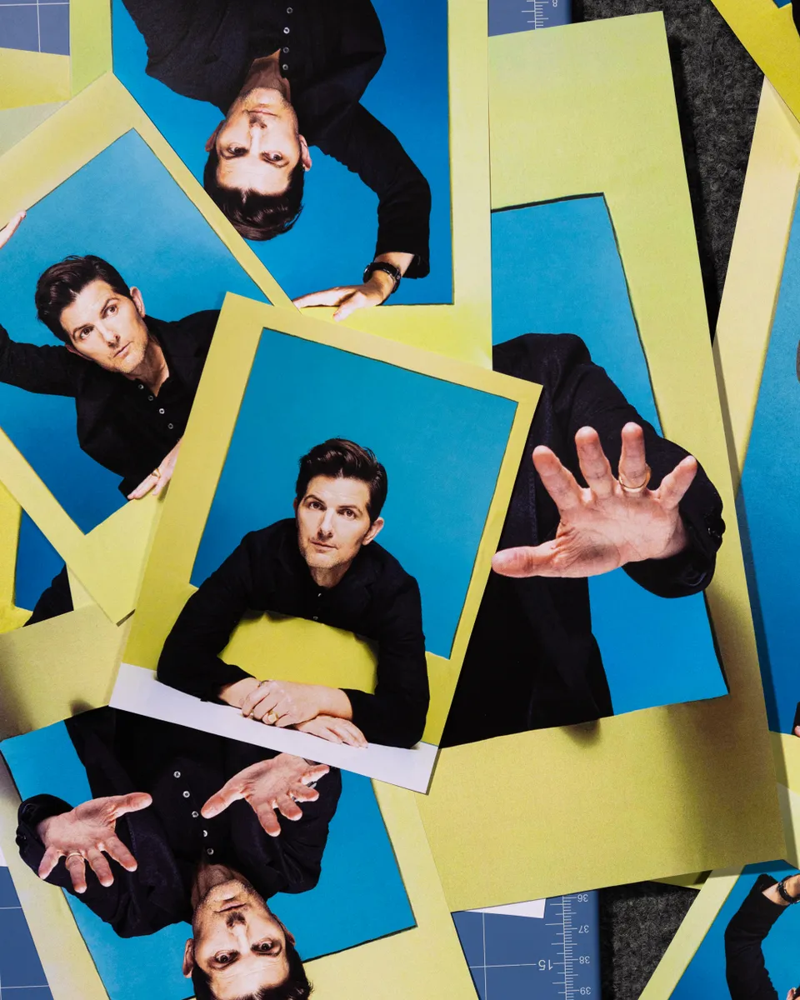
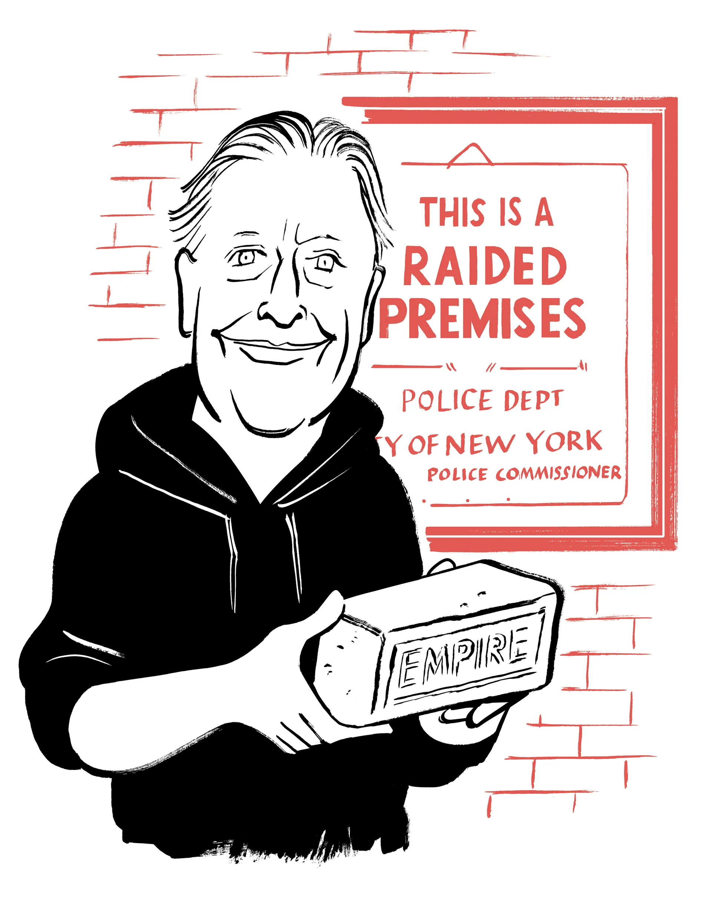
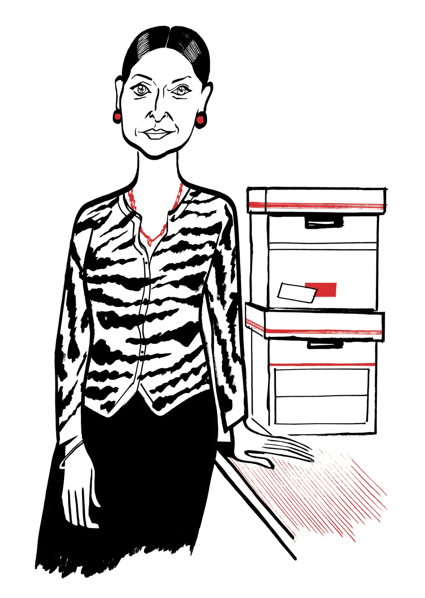
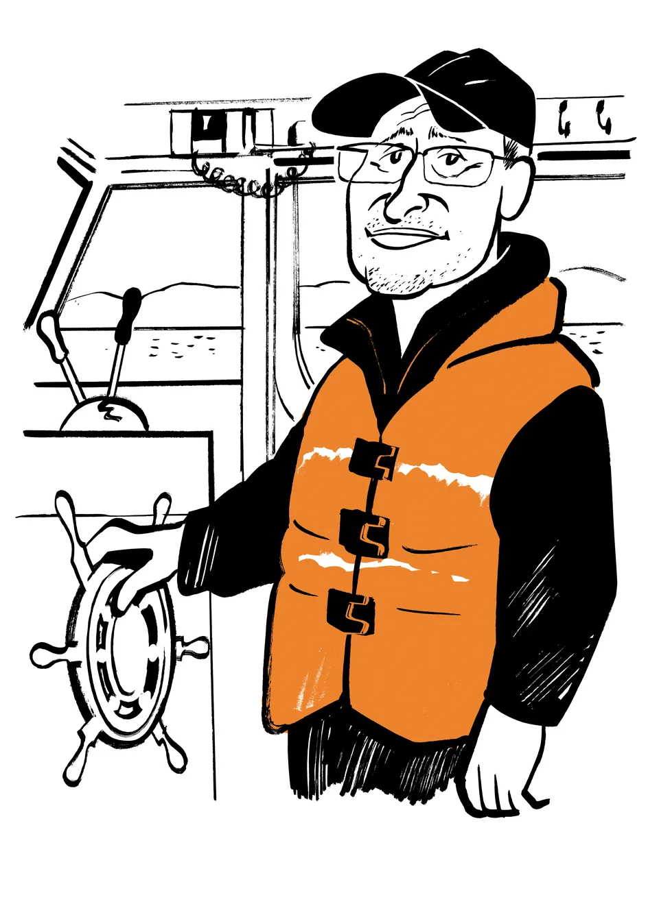

Demining Ukraine Trump has promised to bring a swift end to the war in Ukraine, but Russian troops have already booby-trapped the country with thousands of mines that will take years to remove By Michael Holtz Deal-Making and Credit-Claiming in Trumpworld 2.0 The once and future President is back to wielding leverage like a club, in the Middle East and on Capitol Hill By Susan B. Glasser How David Lynch Became an Icon of Cinema The late director's uniqe vision and the love that his persona inspires make it easy to forget how winding his path to greatness was By Richard Brody Why the Israel-Hamas Ceasefire is Happening Now After months of frustrating the Biden Administration, Benjamin Netanyahu seems poised to accept a deal on the eve of Trump's return to the White House By Isaac Chotiner
For Isabella Rossellini, Acting Goes Beyond Words By Michael Schulman  Adam Scott's Hollywood Slog By Rachel Syme The Liberated Life of Colman Domingo By Michael Schulman Alice Munro's Passive Voice By Rachel Aviv
 HOW THE STONEWALL INN BRICKS AVOIDED THE TRASH By Michael Schulman  JHUMPA LAHIRI'S WRITING CAREER BEGAN IN STOLEN NOTEBOOKS By Jenifer Wilson  AROUND THE WORLD ON THE HUDSON RIVER By Ben McGrath JOHN MULANEY TRIES PIRATE TALK IN AN "S.N.L" REUNINON By Naomi Fry